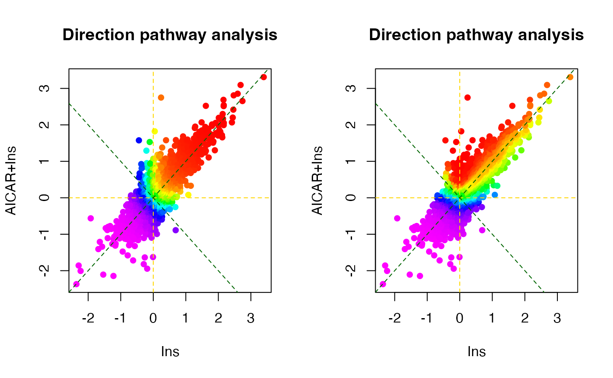
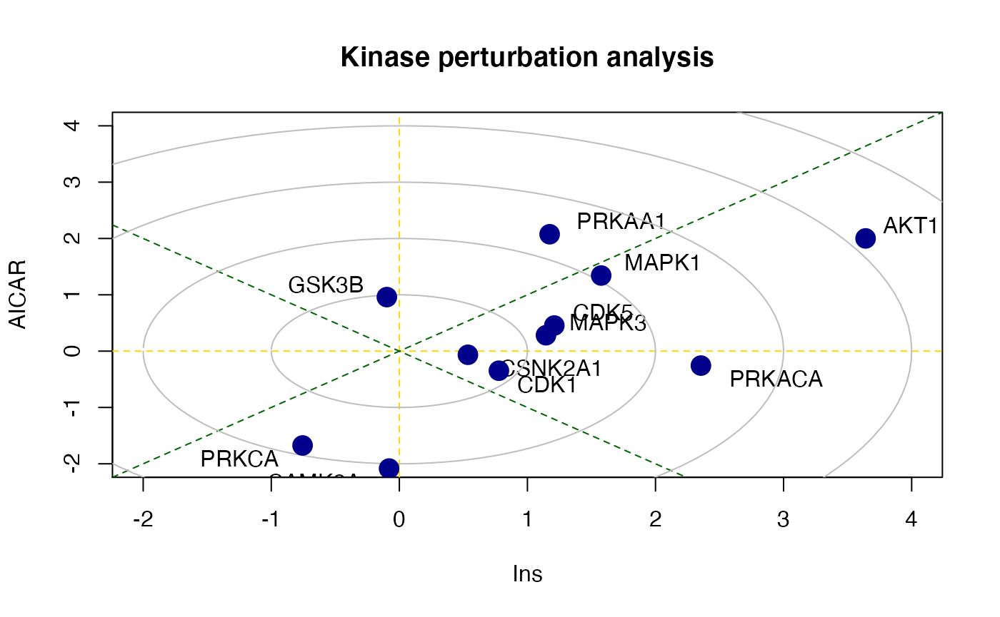
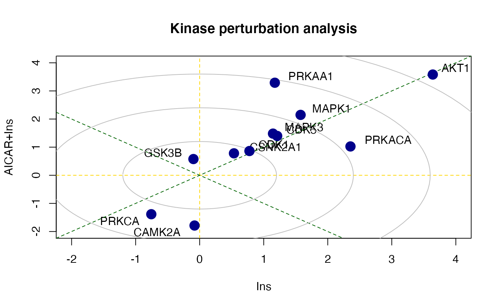
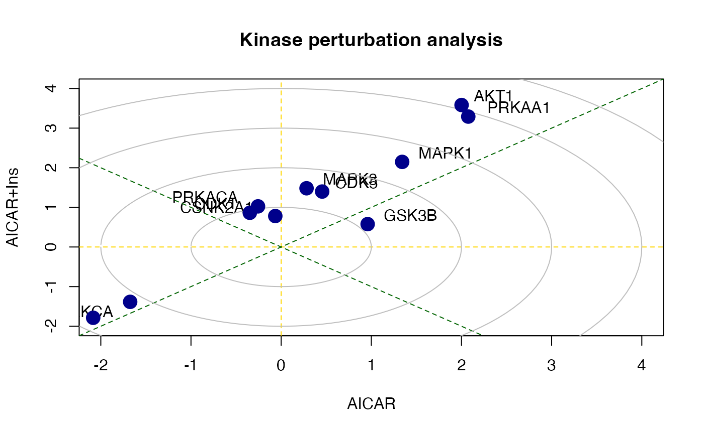

pathway_analysis.RmdMost phosphoproteomic studies have adopted a phosphosite-level analysis of the data. To enable phosphoproteomic data analysis at the gene level, PhosR implements both site- and gene-centric analyses for detecting changes in kinase activities and signalling pathways through traditional enrichment analyses (over-representation or rank-based gene set test, together referred to as‘1-dimensional enrichment analysis’) as well as 2- and 3-dimensional analyses.
This vignette will perform gene-centric pathway enrichment analyses on the normalised myotube phosphoproteomic dataset using both over-representation and rank–based gene set tests and also provide an example of how directPA can be used to test which kinases are activated upon different stimulations in myotubes using 2-dimensional analyses Yang et al. 2014.
First, we will load the PhosR package with few other packages will use for the demonstration purpose.
We will use RUV normalised L6 phosphopreteome data for demonstration of gene-centric pathway analysis. It contains phosphoproteome from three different treatment conditions: (1) AMPK agonist AICAR, (2) insulin (Ins), and (3) in combination (AICAR+Ins).
suppressPackageStartupMessages({
library(calibrate)
library(limma)
library(directPA)
library(org.Rn.eg.db)
library(reactome.db)
library(annotate)
library(PhosR)
})
data("PhosphoSitePlus")We will use the ppe_RUV matrix from batch_correction.
To enable enrichment analyses on both gene and phosphosite levels, PhosR implements a simple method called phosCollapse which reduces phosphosite level of information to the proteins for performing downstream gene-centric analyses. We will utilise two functions, pathwayOverrepresent and pathwayRankBasedEnrichment, to demonstrate 1-dimensional (over-representation and rank-based gene set test) gene-centric pathway enrichment analysis respectively.
First, extract phosphosite information from the ppe object.
sites = paste(sapply(ppe@GeneSymbol, function(x)x),";",
sapply(ppe@Residue, function(x)x),
sapply(ppe@Site, function(x)x),
";", sep = "")Then fit a linear model for each phosphosite.
f <- gsub("_exp\\d", "", colnames(ppe))
X <- model.matrix(~ f - 1)
fit <- lmFit(ppe@assays@data$normalised, X)Extract top-differentially regulated phosphosites for each condition compared to basal.
table.AICAR <- topTable(eBayes(fit), number=Inf, coef = 1)
table.Ins <- topTable(eBayes(fit), number=Inf, coef = 3)
table.AICARIns <- topTable(eBayes(fit), number=Inf, coef = 2)
DE1.RUV <- c(sum(table.AICAR[,"adj.P.Val"] < 0.05), sum(table.Ins[,"adj.P.Val"] < 0.05), sum(table.AICARIns[,"adj.P.Val"] < 0.05))
# extract top-ranked phosphosites for each group comparison
contrast.matrix1 <- makeContrasts(fAICARIns-fIns, levels=X) # defining group comparisons
contrast.matrix2 <- makeContrasts(fAICARIns-fAICAR, levels=X) # defining group comparisons
fit1 <- contrasts.fit(fit, contrast.matrix1)
fit2 <- contrasts.fit(fit, contrast.matrix2)
table.AICARInsVSIns <- topTable(eBayes(fit1), number=Inf)
table.AICARInsVSAICAR <- topTable(eBayes(fit2), number=Inf)
DE2.RUV <- c(sum(table.AICARInsVSIns[,"adj.P.Val"] < 0.05), sum(table.AICARInsVSAICAR[,"adj.P.Val"] < 0.05))
o <- rownames(table.AICARInsVSIns)
Tc <- cbind(table.Ins[o,"logFC"], table.AICAR[o,"logFC"], table.AICARIns[o,"logFC"])
rownames(Tc) <- sites[match(o, rownames(ppe))]
rownames(Tc) <- gsub("(.*)(;[A-Z])([0-9]+)(;)", "\\1;\\3;", rownames(Tc))
colnames(Tc) <- c("Ins", "AICAR", "AICAR+Ins")Summarize phosphosite-level information to proteins for the downstream gene-centric analysis.
pathways = as.list(reactomePATHID2EXTID)
path_names = as.list(reactomePATHID2NAME)
name_id = match(names(pathways), names(path_names))
names(pathways) = unlist(path_names)[name_id]
pathways = pathways[which(grepl("Rattus norvegicus", names(pathways), ignore.case = TRUE))]
pathways = lapply(pathways, function(path) {
gene_name = unname(getSYMBOL(path, data = "org.Rn.eg"))
toupper(unique(gene_name))
})Perform 1D gene-centric pathway analysis
path1 <- pathwayOverrepresent(geneSet, annotation=pathways,
universe = rownames(Tc.gene), alter = "greater")
path2 <- pathwayRankBasedEnrichment(Tc.gene[,1],
annotation=pathways,
alter = "greater")Next, we will compare enrichment of pathways (in negative log10 p-values) between the two 1-dimensional pathway enrichment analysis. On the scatter plot, the x-axis and y-axis refer to the p-values derived from the rank-based gene set test and over-representation test, respectively. We find several expected pathways, while these highly enriched pathways are largely in agreement between the two types of enrichment analyses.
lp1 <- -log10(as.numeric(path2[names(pathways),1]))
lp2 <- -log10(as.numeric(path1[names(pathways),1]))
plot(lp1, lp2, ylab="Overrepresentation (-log10 pvalue)", xlab="Rank-based enrichment (-log10 pvalue)", main="Comparison of 1D pathway analyses", xlim = c(0, 10))
# select highly enriched pathways
sel <- which(lp1 > 1.5 & lp2 > 0.9)
textxy(lp1[sel], lp2[sel], gsub("_", " ", gsub("REACTOME_", "", names(pathways)))[sel])One key aspect in studying signalling pathways is to identify key kinases that are involved in signalling cascades. To identify these kinases, we make use of kinase-substrate annotation databases such as PhosphoSitePlus and Phospho.ELM. These databases are included in the PhosR and directPA packages already. To access them, simply load the package and access the data by data(“PhosphoSitePlus”) and data(“PhosphoELM”).
The 2- and 3-dimensional analyses enable the investigation of kinases regulated by different combinations of treatments. We will introduce more advanced methods implemented in the R package directPA for performing “2 and 3-dimentional” direction site-centric kinase activity analyses.
# 2D direction site-centric kinase activity analyses
par(mfrow=c(1,2))
dpa1 <- directPA(Tc[,c(1,3)], direction=0,
annotation=lapply(PhosphoSite.rat, function(x){gsub(";[STY]", ";", x)}),
main="Direction pathway analysis")
dpa2 <- directPA(Tc[,c(1,3)], direction=pi*7/4,
annotation=lapply(PhosphoSite.rat, function(x){gsub(";[STY]", ";", x)}),
main="Direction pathway analysis")
# top activated kinases
dpa1$pathways[1:5,]
#> pvalue size
#> AKT1 6.207001e-09 9
#> MAPK1 0.00057404 9
#> PRKACA 0.0006825021 25
#> PRKAA1 0.000965093 6
#> MAPK3 0.006670176 10
dpa2$pathways[1:5,]
#> pvalue size
#> PRKAA1 0.00463462 6
#> AKT1 0.02942273 9
#> CSNK2A1 0.2193148 12
#> CDK5 0.2607434 5
#> MAPK1 0.2767886 9There is also a function called perturbPlot2d implemented in kinasePA for testing and visualising activity of all kinases on all possible directions. Below are the demonstration from using this function.
z1 <- perturbPlot2d(Tc=Tc[,c(1,2)],
annotation=lapply(PhosphoSite.rat, function(x){gsub(";[STY]", ";", x)}),
cex=1, xlim=c(-2, 4), ylim=c(-2, 4),
main="Kinase perturbation analysis")
z2 <- perturbPlot2d(Tc=Tc[,c(1,3)], annotation=lapply(PhosphoSite.rat, function(x){gsub(";[STY]", ";", x)}),
cex=1, xlim=c(-2, 4), ylim=c(-2, 4),
main="Kinase perturbation analysis")
z3 <- perturbPlot2d(Tc=Tc[,c(2,3)], annotation=lapply(PhosphoSite.rat, function(x){gsub(";[STY]", ";", x)}),
cex=1, xlim=c(-2, 4), ylim=c(-2, 4),
main="Kinase perturbation analysis")
sessionInfo()
#> R version 4.0.4 (2021-02-15)
#> Platform: x86_64-apple-darwin17.0 (64-bit)
#> Running under: macOS Catalina 10.15.7
#>
#> Matrix products: default
#> BLAS: /Library/Frameworks/R.framework/Versions/4.0/Resources/lib/libRblas.dylib
#> LAPACK: /Library/Frameworks/R.framework/Versions/4.0/Resources/lib/libRlapack.dylib
#>
#> locale:
#> [1] en_US.UTF-8/en_US.UTF-8/en_US.UTF-8/C/en_US.UTF-8/en_US.UTF-8
#>
#> attached base packages:
#> [1] parallel stats4 stats graphics grDevices utils datasets
#> [8] methods base
#>
#> other attached packages:
#> [1] PhosR_1.1.6 annotate_1.68.0 XML_3.99-0.6
#> [4] reactome.db_1.74.0 org.Rn.eg.db_3.12.0 AnnotationDbi_1.52.0
#> [7] IRanges_2.24.1 S4Vectors_0.28.1 Biobase_2.50.0
#> [10] BiocGenerics_0.36.0 directPA_1.5 limma_3.46.0
#> [13] calibrate_1.7.7 MASS_7.3-53
#>
#> loaded via a namespace (and not attached):
#> [1] colorspace_2.0-0 ggsignif_0.6.1
#> [3] ellipsis_0.3.1 class_7.3-18
#> [5] rio_0.5.26 rprojroot_2.0.2
#> [7] circlize_0.4.12 XVector_0.30.0
#> [9] GenomicRanges_1.42.0 GlobalOptions_0.1.2
#> [11] ggdendro_0.1.22 fs_1.5.0
#> [13] proxy_0.4-25 ggpubr_0.4.0
#> [15] bit64_4.0.5 fansi_0.4.2
#> [17] cachem_1.0.4 knitr_1.31
#> [19] jsonlite_1.7.2 broom_0.7.5
#> [21] pheatmap_1.0.12 BiocManager_1.30.10
#> [23] compiler_4.0.4 httr_1.4.2
#> [25] backports_1.2.1 Matrix_1.3-2
#> [27] fastmap_1.1.0 htmltools_0.5.1.1
#> [29] tools_4.0.4 igraph_1.2.6
#> [31] gtable_0.3.0 glue_1.4.2
#> [33] GenomeInfoDbData_1.2.4 reshape2_1.4.4
#> [35] dplyr_1.0.5 Rcpp_1.0.6
#> [37] carData_3.0-4 cellranger_1.1.0
#> [39] jquerylib_0.1.3 pkgdown_1.6.1
#> [41] vctrs_0.3.6 preprocessCore_1.52.1
#> [43] xfun_0.22 stringr_1.4.0
#> [45] network_1.16.1 openxlsx_4.2.3
#> [47] lifecycle_1.0.0 rstatix_0.7.0
#> [49] dendextend_1.14.0 zlibbioc_1.36.0
#> [51] scales_1.1.1 BiocStyle_2.18.1
#> [53] pcaMethods_1.82.0 hms_1.0.0
#> [55] ragg_1.1.1 MatrixGenerics_1.2.1
#> [57] SummarizedExperiment_1.20.0 RColorBrewer_1.1-2
#> [59] yaml_2.2.1 curl_4.3
#> [61] memoise_2.0.0 gridExtra_2.3
#> [63] ggplot2_3.3.3 sass_0.3.1
#> [65] reshape_0.8.8 stringi_1.5.3
#> [67] RSQLite_2.2.4 highr_0.8
#> [69] desc_1.3.0 e1071_1.7-5
#> [71] zip_2.1.1 shape_1.4.5
#> [73] GenomeInfoDb_1.26.4 rlang_0.4.10
#> [75] pkgconfig_2.0.3 systemfonts_1.0.1
#> [77] matrixStats_0.58.0 bitops_1.0-6
#> [79] evaluate_0.14 lattice_0.20-41
#> [81] ruv_0.9.7.1 purrr_0.3.4
#> [83] bit_4.0.4 tidyselect_1.1.0
#> [85] GGally_2.1.1 plyr_1.8.6
#> [87] magrittr_2.0.1 R6_2.5.0
#> [89] generics_0.1.0 DelayedArray_0.16.2
#> [91] DBI_1.1.1 haven_2.3.1
#> [93] pillar_1.5.1 foreign_0.8-81
#> [95] abind_1.4-5 RCurl_1.98-1.3
#> [97] tibble_3.1.0 crayon_1.4.1
#> [99] car_3.0-10 utf8_1.2.1
#> [101] rmarkdown_2.7 viridis_0.5.1
#> [103] readxl_1.3.1 grid_4.0.4
#> [105] data.table_1.14.0 blob_1.2.1
#> [107] forcats_0.5.1 digest_0.6.27
#> [109] xtable_1.8-4 tidyr_1.1.3
#> [111] textshaping_0.3.1 munsell_0.5.0
#> [113] viridisLite_0.3.0 bslib_0.2.4